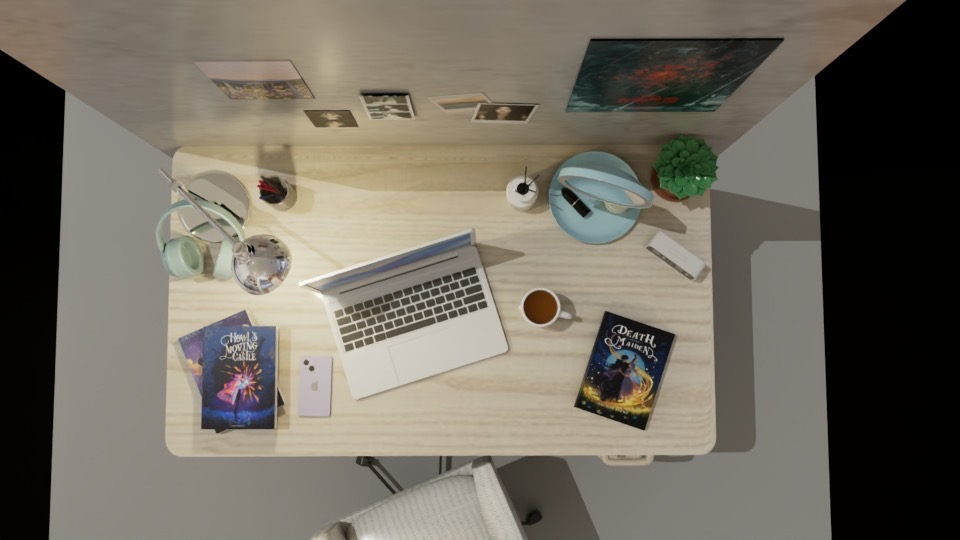
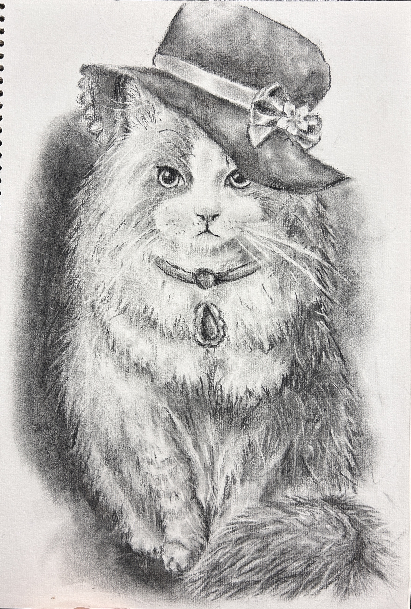
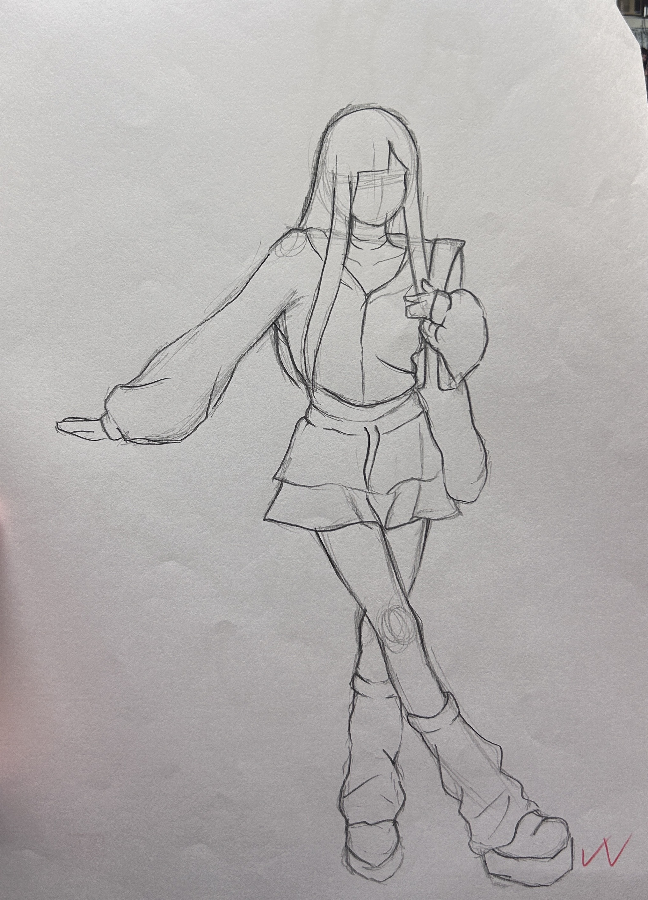
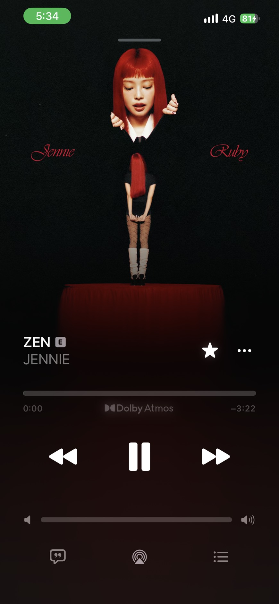

01 / VECTOR
Adobe Illustrator
練習向量繪圖與圖像編排，整理視覺裡的線條和節奏。

A LITTLE ABOUT ME
我是朱芊伃，喜歡把日常的觀察變成畫面。從 3D 空間、角色速寫到平面設計，我享受一步步把想法做出來，也從音樂與小說裡收集靈感。
看看我的創作TOOLS FOR MAKING
從平面編排到立體空間，
用熟悉的工具把想法慢慢完成。
01 / VECTOR
練習向量繪圖與圖像編排，整理視覺裡的線條和節奏。
02 / LAYOUT
運用版面、字級與留白，讓內容清楚又好閱讀。
03 / IMAGE
進行影像調整與合成，為作品找到合適的色彩氛圍。
04 / 3D
從建模到材質與燈光，探索場景的立體呈現。
MADE WITH CURIOSITY
3D 建模、炭筆素描與速寫，
每一次嘗試都是新的觀察。
01 / 3D MODELING
把閱讀、工作與喜歡的小物收進同一個空間，練習用材質與光線營造生活感。

02 / CHARCOAL
用炭筆堆疊明暗和毛絨質感，捕捉貓咪安靜又俏皮的神情。

03 / SKETCH
以簡單線條觀察人物動態，記下姿勢與服裝輪廓。
SOUNDTRACK TO MY DAYS
不同的聲音，陪我切換
專注、放空與充電的時刻。
ARTIST 01
率性又有層次的聲線，讓每首歌都帶著鮮明個性。

ZEN↗ Seoul City↗
Seoul City↗ Fallen Angel↗
Fallen Angel↗
ARTIST 02
細膩的高音與輕柔節奏，適合安靜聽進每一句歌詞。
 thank u, next↗
thank u, next↗ petal↗
petal↗ One Last Time↗
One Last Time↗
ARTIST 03
迷人的復古氛圍與節拍，讓夜晚多了一點電影感。
 The Hills↗
The Hills↗歌曲與圖片為個人喜好分享，所有權利屬於原創歌手及其權利人。
ONE MORE CHAPTER
喜歡沉浸在故事裡，跟著文字走進
全新的角色與想像。